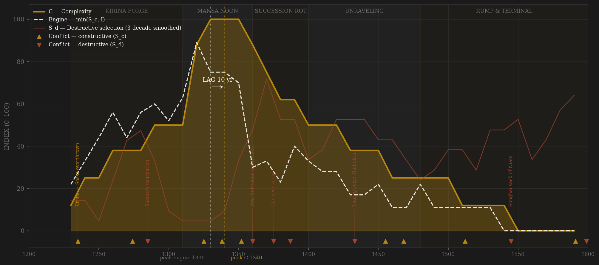
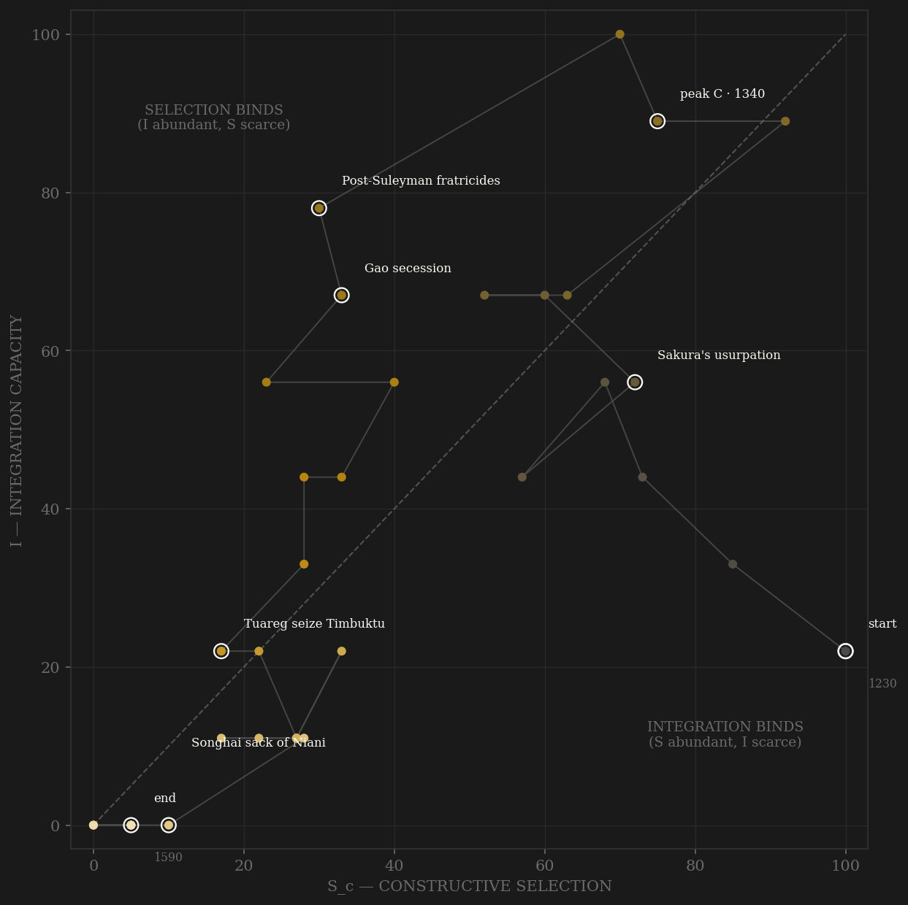

Mali's arc is written almost entirely by outsiders, and the coding wears that on its sleeve. The rise is griot memory: Kirina 1235, where Sundiata broke the Sosso and the Kurukan Fuga assembly constituted the gbara — a real deliberative apparatus known only through seven centuries of oral transmission (grade ○, flagged everywhere it scores). The apex is Arab testimony, and once, remarkably, it is measured: when Mansa Musa passed through Cairo in 1324 he spent so much gold that al-Umari — writing from Cairo informants, in Cairo, about Cairo's own market — records the mithqal depressed for roughly twelve years. A West African polity's wealth left an instrument reading in a third-party economy; that anchor holds up the C peak. Ibn Battuta's 1352–53 journey supplies the I peak the same way: complete route security from Walata to the capital, unguarded roads, functioning cowrie and gold-dust currency zones — the trans-Saharan axis (Walata–Timbuktu–Gao) operating as a single administered market. Then the rot, dated by Ibn Khaldun's king-list: Suleyman dies in 1360 and the ladder that had once elevated a freed slave to the throne (Sakura, ~1285) becomes a kingmaker's corridor — Qasa's nine months, Mari Djata II selling the treasury's great gold nugget below value, Maghan II murdered, the usurper Sandaki killed, Gao seceding around 1375. The unraveling runs on chronicle war notices and Portuguese contact points: Timbuktu to the Tuareg in 1433 — the scholarly capital amputated from the court — Djenné to Songhai in the 1470s, the capital itself sacked by Songhai's kanfari Dawud in 1545–46, and the last imperial act a failed attack on Djenné in 1599, broken by Moroccan musketry two years after Morocco had destroyed Songhai itself. The lag verdict is SIMULTANEOUS under both definitions, and the page says plainly why that should be discounted rather than celebrated: where every channel is coded from the same handful of chroniclers, engine and output move together partly by construction.

The trajectory enters mid-field, not at the origin — Sundiata inherited functioning Mande institutions and a won war, so selection starts high while integration is still assembling. It climbs the integration axis through the conquest consolidation and Sakura's trade revival, crossing the diagonal into selection-binds territory in the early 14th century: from Musa onward, Mali is a coordination-rich state whose binding term is contest — successions increasingly settled outside the gbara's rules. The apex plateau (1320s–1350s) sits high on both axes, the path's brief golden corner. Then the post-1360 fratricides drag it down the selection axis first — the ladder closes, the assembly goes silent — and integration follows as the desert ports slip away: Gao, then Timbuktu, then the bend. The long tail is the sample's most attenuated: two centuries of drift down both axes, punctuated by faint chancery signals (Portuguese embassies 1480s, 1534) that show a court still negotiating long after it stopped coordinating. It ends near the origin — a rump Manden chiefdom holding ceremony without empire — the mirror of where Sundiata started, minus the ascent vector.
Coded by locus and target, never by outcome. Mali contributes a locus precedent to the whole study: THE GAO RULE. When Gao seceded (~1375), the loss is S_d — a province leaving is damage to the polity's own coordination, whatever the province does next — but Songhai's wars against Mali thereafter are B, external rivalry from a successor state. (The Khmer page's Sukhothai 1238 row, built this same session, cites it.) The ledger's other signature is within-rules removal scored constructively: the court's deposition of the mad mansa Khalifa (~1274) is channel-C evidence WITH an S_d residue — the Ramagupta precedent — because an assembly that can remove a king by procedure is contest machinery working, even when the removal itself draws blood. Sakura's usurpation cuts the other way (Wu Zetian precedent): one man is simultaneously the ladder's proudest datum — a freed court slave reaching the throne — and a violation of the lineage rules. Every chronicle-dated war of the 15th–16th c. carries its source flag: the Tarikhs are Songhai-partisan, 250 years late, and used at reduced weight.
| YEAR | CONFLICT | CODE | CODING RATIONALE |
|---|---|---|---|
| 1235 | Kirina — Sosso overthrown | Sc | Sundiata breaks Sumaoro Kante's Sosso: the founding external win; the gold-field lordships absorbed (griot epic ○ + Ibn Khaldun's confirmation ◐) |
| 1274 | Deposition of Khalifa | Sc | The court removes a mad king by procedure and installs the daughter-line (Ibn Khaldun ◐) — within-rules contest with an S_d residue (Ramagupta precedent); scored C, small sd |
| 1285 | Sakura's usurpation | Sd | A freed court slave takes the throne outside lineage rules — simultaneously the farba ladder's ceiling datum (channel A) and a rules violation (Wu Zetian precedent) |
| 1325 | Sagmandia takes Gao | Sc | Musa's general receives Songhai's submission; two princes taken hostage; Timbuktu incorporated — peak external reach |
| 1338 | Mossi raid burns Timbuktu | Sc | Frontier raid — the machinery untouched, damage loads on E (chronicle ○); B by locus despite the burning |
| 1352 | Qasa conspiracy tried at court | Sc | Suleyman's chief wife's plot resolved by audience and law, not arms — within-rules apex contest, eyewitnessed (Ibn Battuta ◐) |
| 1360 | Post-Suleyman fratricides | Sd | Qasa lasts nine months; Mari Djata II seizes the throne, rules as tyrant, sells the great gold nugget below value — 'ruined the empire' (Ibn Khaldun ◐, writing within a generation) |
| 1375 | Gao secession | Sd | THE GAO RULE defined: a province leaving is S_d by locus (internal coordination loss); Songhai's wars hereafter score B as successor-rival |
| 1387 | Maghan II murdered; Sandaki's usurpation | Sd | Three violent transfers in four years — the vizier-usurper killed within months (1390); the council then restores the legitimate line, its last recorded act |
| 1433 | Tuareg seize Timbuktu | Sd | Akil's confederation takes the empire's scholarly capital — core-city loss; the Sankore ladder amputated from the court (Tarikh al-Sudan ◐/○) |
| 1455 | Mossi raids reach the lakes | Sc | Frontier raiding at depth, machinery of the rump untouched (chronicle ○) |
| 1468 | Sunni Ali's Songhai takes the bend | Sc | Timbuktu 1468, Djenné ~1473 after long siege — successor-rival conquest of territory Mali had already lost operationally (Gao rule: B) |
| 1512 | Fulbe sweep (Koli Tenguella) | Sc | The western provinces contested by a rising migratory power — external locus; the Senegambian tier detaches to the Denanke |
| 1545 | Songhai sack of Niani | Sd | Kanfari Dawud occupies the capital a week and defiles the palace (Tarikh al-Sudan ◐/○) — core penetration (Alaric rule) |
| 1591 | Tondibi — regional order collapses | Sc | Morocco destroys Songhai; the rump's strategic environment dissolves — external event, no Mali machinery engaged (bystander note) |
| 1599 | Mahmud IV's Djenné defeat | Sd | The last imperial campaign broken by the Moroccan arma and allied treachery; after Mahmud IV the rump divides among his sons (~1610, beyond window) — terminal fragmentation |
| COMPONENT | GRADE | BASIS |
|---|---|---|
| C — wealth anchor (1320s) | ◐ externally measured event | THE CAIRO GOLD-PRICE DEPRESSION 1324: al-Umari records the mithqal depressed ~12 years in Cairo's own market after Musa's hajj spending (Levtzion & Hopkins 2000, Corpus) — a third-party economy registering Mali's wealth; the strongest datum on the page. Djinguereber 1327 (es-Saheli) dates the mosque program |
| I — Integration | ◐ eyewitness anchor / ○ between | Ibn Battuta 1352–53: 'complete security' Walata→capital, unguarded roads, organized caravans, cowrie/gold-dust currency zones — the one eyewitness (bias flag: Maghrebi jurist scoring by Maliki norms). Between anchors: trans-Saharan axis control (Walata–Timbuktu–Gao), Niger river transport, salt-gold exchange standardization — coded from Levtzion chs. 12–14, Gomez chs. 3–5 |
| S_c — channel A, elite-entry (0.40) | ○ / ◐ at Ibn Khaldun anchors | horon/nyamakala occupational order with warrior-merit ranks (Kurukan Fuga ○ oral); the farba/court-slave ladder — SAKURA, a freed slave on the throne ~1285 (Ibn Khaldun ◐) = the ceiling datum; Sankore scholarly ladder under Musa (judgeships, es-Saheli's recruitment ◐). Book-trade superlative is Leo Africanus ~1510s = SONGHAI Timbuktu — flagged, scored for Mali only in the Musa–Suleyman window. DECAY: kingmaker entry post-1360, farba hereditization (Musa II's vizier state), Tuareg/Mossi periphery capture |
| S_c — channel B, peer rivalry (0.30 HARD CAP) | ○ scholar-coded | Kirina 1235; Mossi raids = B (frontier locus, even when Timbuktu burned 1338); Songhai as successor-rival post-1375 (Gao rule); Tuareg desert-edge contest; terminal Songhai/Moroccan-order pressure; Portuguese commercial diversion (low B, no war) |
| S_c — channel C, within-rules contest (0.30) | ○ oral constitution, flagged | gbara great assembly + Kurukan Fuga (~1236): kingmaker lineages, speech rights, deliberative rules — REAL apparatus, evidence grade ○ (griot-transmitted; modern text reconstructed at the 1998 Kankan workshop). Scored only where it demonstrably worked: Khalifa's deposition ~1274, Abu Bakr's daughter-line accession, Musa's deputy-regency succession 1312, the 1300 and 1390 line restorations |
| S_d — Destructive | ◐ Ibn Khaldun's list / ○ chronicles | Khalifa's deposition (residue), Sakura's usurpation, the post-1360 fratricides (Qasa, Mari Djata II, Maghan II 1387, Sandaki 1389–90), Gao secession ~1375, Timbuktu 1433, 15th-c. provincial fragmentation, Niani sacked 1545–46, terminal division post-1599 |
| Sc_v1_combat (frozen synthetic) | ○ scholar-coded | Channel B alone (external-war-only, the prior definition's operative content) — no v1 page ever existed; synthesized per the Mughal/Gupta straight-to-v2 rule |
| E — Entropy | ◐ lake-sediment bands / ○ coded | Lake Bosumtwi record (Shanahan et al. 2009 Science): Sahel/forest-zone aridification bands 15th–16th c. — used where published. Succession-interregnum frequency, route-security decay, war damage coded ○ |
| C — Complexity | ○ with ◐ anchors | Cairo gold anchor (above); Niger-bend urban populations (Jenne-jeno archaeology ◐ background; Timbuktu/Djenné estimates ○); mosque construction (Djinguereber, Sankore rebuild); manuscript/book-trade scale from published estimates — Songhai-era peak flagged |
| R — Renewal (population) | ○ DEEP UNCERTAINTY | No census tradition. Order-of-magnitude from McEvedy & Jones regional totals apportioned; ~8M at apex, falling to ~2M rump. Shape more trustworthy than level — flagged in every R_note |
37 decade rows (1230…1590) built by scripts/build_mali_sicre.py — a straight-to-v2 contestability build (AMENDMENT_S_definition_v2.md): Sc_constructive = 0.40 elite-entry (horon/nyamakala merit ranks, farba slave-official ladder, Sankore scholarly channel) + 0.30 peer rivalry (hard cap, locus-cleaned) + 0.30 within-rules contest (gbara/Kurukan Fuga, oral-constitution grade ○ flagged); Sc_v1_combat = channel B alone, synthesized per the Mughal/Gupta straight-to-v2 rule (no v1 page ever existed). Channel ledger: data/raw/mali/coding_ledger_v2.csv; audit: components_audit.csv; chronicler-bias table (al-Umari never visited; Ibn Battuta the one eyewitness; Ibn Khaldun's king-list carries the dynastic chronology; the Tarikhs are 17th-c. Songhai-partisan compilations; Kurukan Fuga is a 1998 reconstruction of oral tradition): data/raw/mali/SOURCES.md. FROZEN-PROTOCOL LAG UNDER BOTH DEFINITIONS (3-decade centered rolling mean, engine=min(Sc,I)): v2 engine 1330 → C 1340 = +10 SIMULTANEOUS; v1 engine 1330 → C 1340 = +10 SIMULTANEOUS — no flip; UNSMOOTHED sensitivity: both engine 1320 → C 1330 = +10 SIMULTANEOUS (stable under smoothing; Athens short-series discipline — ~37 rows but only ~8 independent evidence anchors, resolution coarser than the grid). HALO CAVEAT AT FULL STRENGTH: Mali lands in the scholar-coded SIMULTANEOUS cluster (gupta 0, achaemenid 0, sasanian 0, abbasid −10) — the same chroniclers' 'Musa golden age' narrative feeds both the contestability and the complexity coding, correlating engine and output by construction; this page's verdict should carry near-zero weight in pooled lag tests and is excluded from thick-evidence-only headline stats. UNIVERSALITY NOTE (why this polity is on the roster): Mali is the FIRST SUB-SAHARAN POLITY in the sample — its inclusion widens the framework's claim to universality by scoring the S×I machinery on a savanna-and-desert trade empire with an oral constitution rather than another archive-state; that the channels map cleanly (farba ladder = A, gbara = C, Kirina/Mossi/Songhai = B, fratricides/secessions = S_d) is itself a finding, and the coarse evidence grade is the honestly-paid price. Deep-uncertainty band post-1400: channels coded conservative low-flat between Portuguese contact points and chronicle war notices; Bosumtwi carries E — fabricated worse than gap. Polity window 1235–1600 (Gomez convention); the rump's final division (~1610) and Niani's last burning (1670 tradition) fall beyond it, noted not hidden. Rebuild: build_mali_sicre.py, then polity_report.py --slug mali